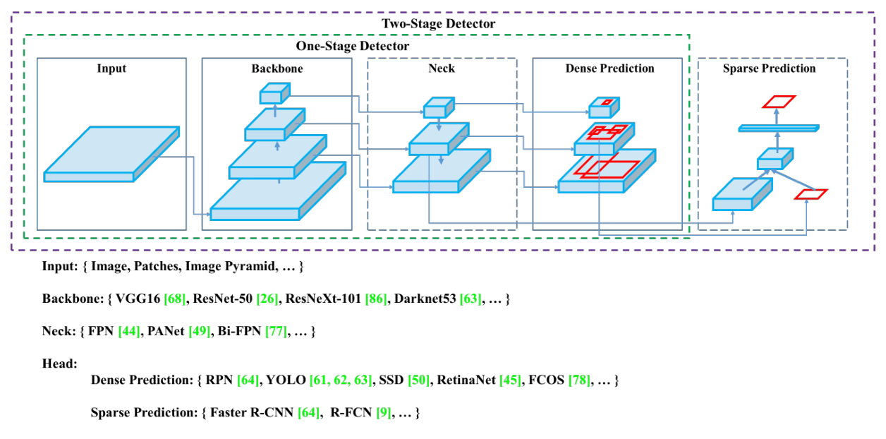
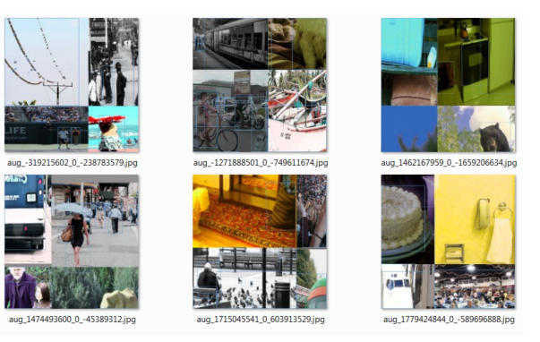
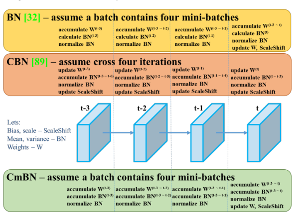
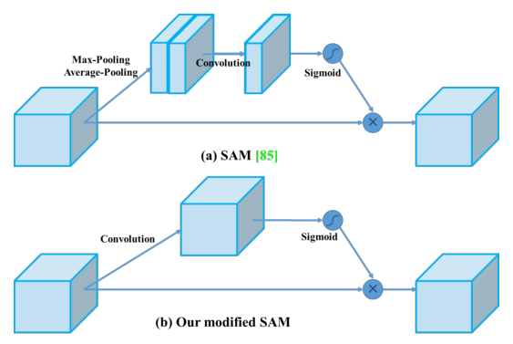
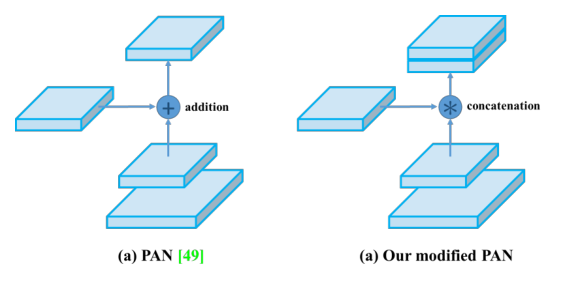
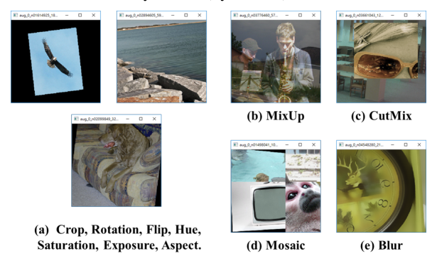
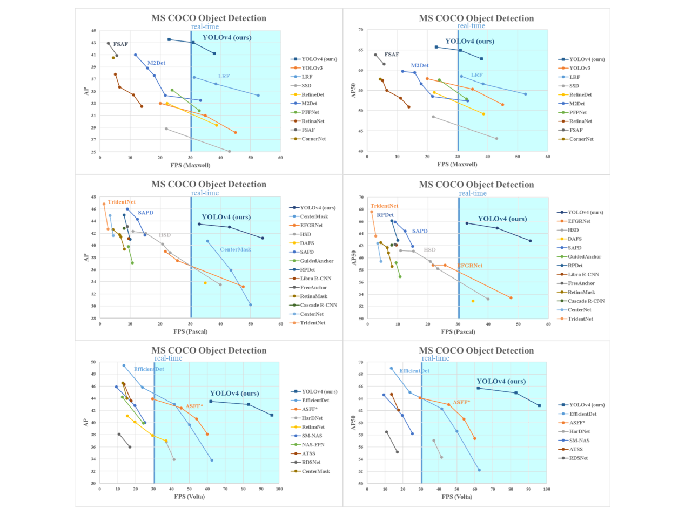

YOLOv4: 객체 탐지의 최적 속도와 정확도
YOLOv4: Optimal Speed and Accuracy of Object Detection
YOLOv4는 고가의 다중 GPU 환경 없이도 단일 일반 GPU(GTX 1080 Ti 또는 RTX 2080 Ti)에서 학습이 가능하고, 실제 상용 GPU 환경에서 실시간(real-time)으로 동작하면서도 최고 수준의 정확도를 달성하도록 설계된 1단계(one-stage) 앵커 기반(anchor-based) 객체 탐지기입니다.
- 핵심 문제 의식: 기존의 최고 성능 신경망은 실시간 동작이 불가능하며 대규모 미니배치(mini-batch) 학습을 위해 다수의 GPU가 필요했습니다. 본 논문은 이론적 연산량(BFLOP) 수치에만 매달리지 않고 실제 병렬 연산에 최적화된 고속·고정확도 탐지기를 제안합니다.
- 주요 아키텍처 및 기법: CSPDarknet53 백본(backbone), SPP(Spatial Pyramid Pooling) 및 수정된 PANet(Path Aggregation Network) 넥(neck), YOLOv3 헤드(head)로 구성됩니다. 여기에 Bag of Freebies(BoF)(Mosaic 데이터 증강, 자기 적대적 학습(SAT), CmBN, CIoU 손실, DropBlock, 클래스 레이블 스무딩, 그리드 민감도 제거 등)와 Bag of Specials(BoS)(Mish 활성화 함수, 수정된 SAM, DIoU-NMS 등)를 체계적으로 검증·결합했습니다.
- 주요 벤치마크 성능 (MS COCO test-dev 2017): Tesla V100 환경에서 실시간 속도인 약 65 FPS(표 10 기준 608×608 입력 시 62 FPS, 512×512 입력 시 83 FPS)로 43.5% AP (65.7% AP50)를 달성했습니다. 이는 동등한 정확도의 EfficientDet 대비 2배 빠른 속도이며, 기존 YOLOv3 대비 AP는 10%(33.0%→43.5% 기준 약 10%p), FPS는 12% 향상된 결과입니다.
초록 (Abstract)
합성곱 신경망(CNN, Convolutional Neural Network)의 정확도를 향상시킨다고 알려진 수많은 기법(feature)들이 존재한다. 이러한 기법들의 조합을 대규모 데이터셋에서 실질적으로 검증하고, 그 결과에 대한 이론적 근거를 제시하는 작업이 필요하다. 일부 기법은 특정 모델이나 특정 문제에서만 동작하거나 소규모 데이터셋에서만 효과를 보이는 반면, 배치 정규화(BN, Batch Normalization)나 잔차 연결(residual connection)과 같은 일부 기법은 대부분의 모델, 과제(task), 데이터셋에 보편적으로 적용 가능하다. 본 연구에서는 가중 잔차 연결(WRC, Weighted-Residual-Connections), 교차 단계 부분 연결(CSP, Cross-Stage-Partial-connections), 교차 미니배치 정규화(CmBN, Cross mini-Batch Normalization), 자기 적대적 학습(SAT, Self-Adversarial-Training), 그리고 Mish 활성화 함수(Mish-activation) 등이 이러한 보편적 기법에 해당한다고 가정한다.
본 연구에서는 WRC, CSP, CmBN, SAT, Mish 활성화 함수, Mosaic 데이터 증강(Mosaic data augmentation), DropBlock 규제(DropBlock regularization), 그리고 CIoU 손실(CIoU loss) 등 새로운 기법들을 사용하고 이 중 일부를 결합하여, MS COCO 데이터셋에서 Tesla V100 기준 실시간 속도인 약 65 FPS로 43.5% AP (65.7% AP50)라는 최고 수준(state-of-the-art)의 성능을 달성하였다. 소스 코드는 https://github.com/AlexeyAB/darknet에 공개되어 있다.
1. 서론 (Introduction)
대다수의 CNN 기반 객체 탐지기는 주로 보조적인 추천 시스템(recommendation systems) 수준에만 적용 가능했다. 예를 들어, 도시 감시 카메라를 통해 빈 주차 공간을 찾는 작업은 느리지만 정확한 모델로 수행되는 반면, 자동차 충돌 경고 시스템은 빠르지만 부정확한 모델을 사용한다. 실시간 객체 탐지기의 정확도를 높이면 단순히 힌트를 생성하는 추천 시스템뿐만 아니라, 독립적인 공정 관리(stand-alone process management)와 인간의 개입을 줄이는 분야에도 활용할 수 있다. 또한 일반 그래픽 처리 장치(GPU, Graphics Processing Unit)에서 실시간 객체 탐지기가 동작할 수 있게 되면 합리적인 비용으로 대량 보급이 가능해진다. 오늘날 가장 정확한 신경망들은 실시간으로 동작하지 않으며, 큰 미니배치 크기(mini-batch size)로 학습하기 위해 수많은 GPU를 필요로 한다. 우리는 일반 GPU에서 실시간으로 동작하고, 단 하나의 일반 GPU만으로도 학습이 가능한 CNN을 개발함으로써 이러한 문제를 해결한다.

본 연구의 주된 목표는 이론적 연산량 지표(BFLOP)를 낮추는 것보다, 실제 상용 시스템(production systems)에서 객체 탐지기의 동작 속도를 빠르게 만들고 병렬 연산(parallel computations)에 최적화하는 것이다. 또한 설계한 객체 탐지기를 누구나 쉽게 학습하고 활용할 수 있도록 하는 데 목표를 두었다. 예를 들어, 일반 GPU를 사용하는 사람이라면 누구나 그림 1에 나타난 YOLOv4의 결과처럼 실시간으로 고품질의 설득력 있는 객체 탐지 결과를 얻을 수 있다. 본 연구의 기여는 다음과 같이 요약된다.
- 효율적이고 강력한 객체 탐지 모델을 개발하였다. 이를 통해 누구나 1080 Ti 또는 2080 Ti GPU를 사용하여 매우 빠르고 정확한 객체 탐지기를 학습할 수 있다.
- 객체 탐지기 학습 과정에서 최신 Bag-of-Freebies(BoF) 및 Bag-of-Specials(BoS) 기법들의 영향을 체계적으로 검증하였다.
- CBN [89], PAN [49], SAM [85] 등을 포함한 최신 기법들을 수정하여 더 효율적이고 단일 GPU 학습에 적합하도록 개선하였다.
2. 관련 연구 (Related Work)

2.1. 객체 탐지 모델 (Object detection models)
현대적인 객체 탐지기는 일반적으로 두 부분으로 구성된다: ImageNet으로 사전 학습(pre-trained)된 백본(backbone)과 객체의 클래스 및 경계 상자(bounding box)를 예측하는 데 사용되는 헤드(head)이다. GPU 플랫폼에서 동작하는 탐지기의 경우 백본으로 VGG [68], ResNet [26], ResNeXt [86], 또는 DenseNet [30] 등이 사용될 수 있다. CPU 플랫폼에서 동작하는 탐지기의 경우 백본으로 SqueezeNet [31], MobileNet [28, 66, 27, 74], 또는 ShuffleNet [97, 53] 등이 활용된다.
헤드 부분은 보통 두 종류, 즉 1단계 객체 탐지기(one-stage object detector)와 2단계 객체 탐지기(two-stage object detector)로 분류된다. 가장 대표적인 2단계 객체 탐지기는 R-CNN [19] 계열로, Fast R-CNN [18], Faster R-CNN [64], R-FCN [9], Libra R-CNN [58] 등이 포함된다. 또한 RepPoints [87]와 같이 2단계 객체 탐지기를 앵커 프리(anchor-free) 객체 탐지기로 구성할 수도 있다. 1단계 객체 탐지기의 대표적인 모델로는 YOLO [61, 62, 63], SSD [50], RetinaNet [45]이 있다. 최근에는 앵커 프리 1단계 객체 탐지기들이 개발되었으며, 이러한 유형의 탐지기로는 CenterNet [13], CornerNet [37, 38], FCOS [78] 등이 있다.
최근 개발된 객체 탐지기들은 백본과 헤드 사이에 여러 계층을 삽입하는 경우가 많으며, 이 계층들은 보통 서로 다른 단계(stage)의 특징 맵(feature map)을 수집하는 역할을 한다. 이를 객체 탐지기의 넥(neck)이라고 부른다. 일반적으로 넥은 여러 개의 상향식 경로(bottom-up path)와 하향식 경로(top-down path)로 구성된다. 이러한 메커니즘을 갖춘 네트워크로는 FPN(Feature Pyramid Network) [44], PAN(Path Aggregation Network) [49], BiFPN [77], NAS-FPN [17] 등이 있다.
위의 모델들 외에도, 일부 연구자들은 객체 탐지를 위한 새로운 백본(DetNet [43], DetNAS [7])이나 완전히 새로운 전체 모델(SpineNet [12], HitDetector [20])을 직접 구축하는 데 중점을 두었다.
요약하자면, 일반적인 객체 탐지기는 다음과 같은 여러 부분으로 구성된다(그림 2 참고).
- 입력(Input): 이미지(Image), 패치(Patches), 이미지 피라미드(Image Pyramid)
- 백본(Backbones): VGG16 [68], ResNet-50 [26], SpineNet [12], EfficientNet-B0/B7 [75], CSPResNeXt50 [81], CSPDarknet53 [81]
- 넥(Neck):
- 추가 블록(Additional blocks): SPP [25], ASPP [5], RFB [47], SAM [85]
- 경로 집계 블록(Path-aggregation blocks): FPN [44], PAN [49], NAS-FPN [17], Fully-connected FPN, BiFPN [77], ASFF [48], SFAM [98]
- 헤드(Heads):
- 밀집 예측(Dense Prediction, 1단계):
- 앵커 기반(anchor-based): RPN [64], SSD [50], YOLO [61], RetinaNet [45]
- 앵커 프리(anchor-free): CornerNet [37], CenterNet [13], MatrixNet [60], FCOS [78]
- 희소 예측(Sparse Prediction, 2단계):
- 앵커 기반(anchor-based): Faster R-CNN [64], R-FCN [9], Mask R-CNN [23]
- 앵커 프리(anchor-free): RepPoints [87]
- 밀집 예측(Dense Prediction, 1단계):
2.2. Bag of Freebies (BoF)
일반적으로 기존의 객체 탐지기는 오프라인(offline)으로 학습된다. 따라서 연구자들은 이 장점을 활용하여, 추론 비용(inference cost)을 증가시키지 않으면서 객체 탐지기의 정확도를 높일 수 있는 더 나은 학습 방법들을 개발하고자 한다. 이처럼 학습 전략만 변경하거나 학습 비용만을 증가시키는 기법들을 우리는 “Bag of Freebies”라고 부른다. 객체 탐지 방법에서 자주 채택되며 Bag of Freebies의 정의에 부합하는 대표적인 기법은 데이터 증강(data augmentation)이다. 데이터 증강의 목적은 입력 이미지의 변동성을 높여, 설계된 객체 탐지 모델이 다양한 환경에서 얻은 이미지에 대해 더 높은 강건성(robustness)을 갖도록 하는 것이다. 예를 들어, 광도 왜곡(photometric distortion)과 기하학적 왜곡(geometric distortion)은 흔히 사용되는 두 가지 데이터 증강 기법으로 객체 탐지 과제에 분명한 이점을 제공한다. 광도 왜곡을 다룰 때는 이미지의 밝기(brightness), 대비(contrast), 색조(hue), 채도(saturation), 노이즈(noise)를 조정한다. 기하학적 왜곡에서는 무작위 크기 조절(random scaling), 자르기(cropping), 뒤집기(flipping), 회전(rotating) 등을 추가한다.
위에서 언급한 데이터 증강 기법들은 모두 픽셀 단위(pixel-wise)의 조정이며, 조정된 영역 내의 모든 원본 픽셀 정보는 유지된다. 또한 데이터 증강을 연구하는 일부 연구자들은 객체 가림(object occlusion) 문제를 시뮬레이션하는 데 중점을 두었으며, 이미지 분류와 객체 탐지에서 좋은 결과를 거두었다. 예를 들어, Random Erase [100]와 CutOut [11]은 이미지에서 사각형 영역을 무작위로 선택하여 무작위 값이나 0으로 채운다. Hide-and-Seek [69]와 GridMask [6]는 이미지에서 여러 사각형 영역을 무작위 또는 균등하게 선택하여 모두 0으로 대체한다. 유사한 개념을 특징 맵(feature map)에 적용한 기법으로는 DropOut [71], DropConnect [80], DropBlock [16]이 있다. 또한 여러 이미지를 함께 사용하여 데이터 증강을 수행하는 방법들도 제안되었다. 예를 들어, MixUp [92]은 두 이미지를 서로 다른 계수 비율로 곱하고 중첩한 뒤, 이 중첩 비율에 맞추어 레이블(label)을 조정한다. CutMix [91]는 잘라낸 이미지를 다른 이미지의 사각형 영역 위에 덮어씌우고, 혼합 영역의 크기에 따라 레이블을 조정한다. 앞서 언급한 방법들 외에도, 스타일 전이 GAN(style transfer GAN) [15] 역시 데이터 증강에 사용되며, 이는 CNN이 학습하는 텍스처 편향(texture bias)을 효과적으로 줄여준다.
앞서 제안된 다양한 접근법과 달리, 또 다른 Bag of Freebies 기법들은 데이터셋 내 의미론적 분포(semantic distribution)에 편향(bias)이 있을 수 있는 문제를 해결하는 데 전념한다. 의미론적 분포 편향 문제를 다룰 때 매우 중요한 이슈는 서로 다른 클래스 간의 데이터 불균형(data imbalance) 문제이며, 2단계 객체 탐지기에서는 주로 Hard Negative Example Mining [72]이나 Online Hard Example Mining(OHEM) [67]으로 이 문제를 해결한다. 그러나 이러한 예제 마이닝 기법은 밀집 예측(dense prediction) 아키텍처에 속하는 1단계 객체 탐지기에는 적용하기 어렵다. 이에 Lin 등 [45]은 다양한 클래스 간에 존재하는 데이터 불균형 문제를 해결하기 위해 Focal Loss를 제안하였다. 또 다른 매우 중요한 문제는 레이블링 시 흔히 사용되는 원-핫 하드 표현(one-hot hard representation)으로는 서로 다른 범주 간의 연관 정도를 표현하기 어렵다는 점이다. [73]에서 제안된 레이블 스무딩(label smoothing)은 학습 시 하드 레이블(hard label)을 소프트 레이블(soft label)로 변환하여 모델을 더욱 강건하게 만든다. 더 나은 소프트 레이블을 얻기 위해, Islam 등 [33]은 지식 증류(knowledge distillation) 개념을 도입하여 레이블 정제 네트워크(label refinement network)를 설계하였다.
마지막 Bag of Freebies는 경계 상자(BBox, Bounding Box) 회귀의 목적 함수(objective function)이다. 전통적인 객체 탐지기는 보통 평균 제곱 오차(MSE, Mean Square Error)를 사용하여 BBox의 중심점 좌표와 높이·너비, 즉 $\{x_{\text{center}}, y_{\text{center}}, w, h\}$ 또는 좌상단 점과 우하단 점, 즉 $\{x_{\text{top left}}, y_{\text{top left}}, x_{\text{bottom right}}, y_{\text{bottom right}}\}$에 대해 직접 회귀를 수행한다. 앵커 기반(anchor-based) 방법의 경우, 이에 대응하는 오프셋(offset)인 $\{x_{\text{center offset}}, y_{\text{center offset}}, w_{\text{offset}}, h_{\text{offset}}\}$ 또는 $\{x_{\text{top left offset}}, y_{\text{top left offset}}, x_{\text{bottom right offset}}, y_{\text{bottom right offset}}\}$을 추정한다. 그러나 BBox의 각 점의 좌표 값을 직접 추정하는 것은 이 점들을 독립 변수로 취급하는 것이며, 실제로는 객체 자체의 온전한 형태(integrity)를 고려하지 못한다.
이 문제를 더 잘 처리하기 위해 최근 일부 연구자들은 예측된 BBox 영역과 정답(ground truth) BBox 영역의 중첩 범위를 고려하는 IoU 손실(IoU loss) [90]을 제안하였다. IoU 손실 계산 과정은 정답과의 IoU를 계산함으로써 BBox의 네 좌표 점을 연동하고, 생성된 결과를 하나의 통합된 식으로 묶어 처리한다. IoU는 크기 불변(scale invariant) 표현이므로, 전통적인 방식에서 $\{x, y, w, h\}$의 $l_1$ 또는 $l_2$ 손실을 계산할 때 크기에 따라 손실이 커지는 문제를 해결할 수 있다. 최근 연구자들은 IoU 손실을 지속적으로 개선하고 있다. 예를 들어, GIoU 손실 [65]은 중첩 영역뿐만 아니라 객체의 형태와 방향성까지 포함한다. 해당 연구에서는 예측된 BBox와 정답 BBox를 동시에 포괄할 수 있는 최소 면적의 BBox를 찾아, 이를 기존 IoU 손실의 분모를 대체하는 분모로 사용할 것을 제안하였다. DIoU 손실 [99]은 여기에 객체 중심 간 거리를 추가로 고려하며, CIoU 손실 [99]은 중첩 면적, 중심점 간 거리, 그리고 종횡비(aspect ratio)를 동시에 고려한다. CIoU는 BBox 회귀 문제에서 더 나은 수렴 속도와 정확도를 달성할 수 있다.
2.3. Bag of Specials (BoS)
추론 비용을 아주 조금만 증가시키면서도 객체 탐지 정확도를 크게 향상시킬 수 있는 플러그인 모듈(plugin module)과 후처리(post-processing) 기법들을 우리는 “Bag of Specials”라고 부른다. 일반적으로 이러한 플러그인 모듈은 수용 영역(receptive field) 확장, 어텐션 메커니즘(attention mechanism) 도입, 특징 통합 능력 강화 등 모델의 특정 속성을 향상시키기 위한 것이며, 후처리는 모델의 예측 결과를 선별(screening)하는 방법이다.
수용 영역을 강화하는 데 흔히 사용되는 모듈로는 SPP [25], ASPP [5], RFB [47]가 있다. SPP 모듈은 공간 피라미드 매칭(SPM, Spatial Pyramid Matching) [39]에서 유래하였으며, SPM의 원래 방식은 특징 맵을 $d \times d$ 크기의 동일한 블록 여러 개($d \in \{1, 2, 3, \dots\}$)로 분할하여 공간 피라미드를 형성한 뒤 BoW(bag-of-word) 특징을 추출하는 것이었다. SPP는 SPM을 CNN에 통합하고 BoW 연산 대신 최대 풀링(max-pooling) 연산을 사용한다. He 등 [25]이 제안한 SPP 모듈은 1차원 특징 벡터를 출력하기 때문에 완전 합성곱 신경망(FCN, Fully Convolutional Network)에 적용하는 것이 불가능하다. 따라서 YOLOv3 [63] 설계에서 Redmon과 Farhadi는 스트라이드(stride)가 1이고 커널 크기가 $k \times k$ ($k = \{1, 5, 9, 13\}$)인 최대 풀링 출력들을 채널 방향으로 연결(concatenation)하도록 SPP 모듈을 개선하였다. 이 설계 아래에서 비교적 큰 $k \times k$ 최대 풀링은 백본 특징의 수용 영역을 효과적으로 넓힌다. 개선된 SPP 모듈을 추가한 후, YOLOv3-608은 MS COCO 객체 탐지 과제에서 단 0.5%의 추가 연산 비용만으로 $\text{AP}_{50}$을 2.7% 향상시켰다. ASPP [5] 모듈과 개선된 SPP 모듈의 연산상 차이는 주로 기존의 스트라이드 1, $k \times k$ 최대 풀링 대신, 팽창률(dilated ratio)이 $k$이고 스트라이드가 1인 여러 개의 $3 \times 3$ 팽창 합성곱(dilated convolution) 연산을 사용한다는 점이다. RFB 모듈은 팽창률이 $k$이고 스트라이드가 1인 여러 개의 $k \times k$ 커널 팽창 합성곱을 사용하여 ASPP보다 더 포괄적인 공간적 커버리지(spatial coverage)를 얻는다. RFB [47]는 단 7%의 추가 추론 시간만으로 MS COCO에서 SSD의 $\text{AP}_{50}$을 5.7% 높였다.
객체 탐지에서 자주 사용되는 어텐션 모듈은 크게 채널 단위 어텐션(channel-wise attention)과 포인트 단위 어텐션(point-wise attention)으로 나뉘며, 이 두 어텐션 모델의 대표적인 예는 각각 SE(Squeeze-and-Excitation) [29]와 SAM(Spatial Attention Module) [85]이다. SE 모듈은 연산량을 단 2%만 증가시키고도 ImageNet 이미지 분류 과제에서 ResNet50의 Top-1 정확도를 1% 향상시킬 수 있지만, GPU에서는 보통 추론 시간이 약 10% 증가하므로 모바일 기기에 더 적합하다. 반면 SAM은 단 0.1%의 추가 연산만으로 ImageNet 이미지 분류 과제에서 ResNet50-SE의 Top-1 정확도를 0.5% 향상시킬 수 있다. 무엇보다도 GPU에서의 추론 속도에 전혀 영향을 미치지 않는다.
특징 통합(feature integration) 측면에서 초기 방식은 스킵 연결(skip connection) [51]이나 하이퍼컬럼(hyper-column) [22]을 사용하여 저수준의 물리적 특징(low-level physical feature)을 고수준의 의미론적 특징(high-level semantic feature)에 통합하는 것이었다. FPN과 같은 다중 스케일(multi-scale) 예측 방식이 보편화되면서, 서로 다른 특징 피라미드를 통합하는 경량 모듈들이 다수 제안되었다. 이러한 종류의 모듈로는 SFAM [98], ASFF [48], BiFPN [77]이 있다. SFAM의 핵심 아이디어는 다중 스케일로 연결된 특징 맵에 SE 모듈을 사용하여 채널 수준(channel-wise level)의 재가중치(re-weighting)를 수행하는 것이다. ASFF는 포인트 수준(point-wise level) 재가중치로 소프트맥스(softmax)를 사용한 뒤 서로 다른 스케일의 특징 맵을 더한다. BiFPN에서는 스케일 수준(scale-wise level)의 재가중치를 수행하기 위해 다중 입력 가중 잔차 연결(multi-input weighted residual connections)을 제안하고, 서로 다른 스케일의 특징 맵을 더한다.
딥러닝 연구에서 일부 연구자들은 좋은 활성화 함수(activation function)를 찾는 데 집중해 왔다. 좋은 활성화 함수는 기울기(gradient)가 더 효율적으로 전파되도록 하면서도 추가 연산 비용을 크게 발생시키지 않는다. 2010년 Nair와 Hinton [56]은 기존의 tanh 및 sigmoid 활성화 함수에서 빈번히 발생하던 기울기 소실(gradient vanish) 문제를 실질적으로 해결하기 위해 ReLU를 제안하였다. 이후 역시 기울기 소실 문제를 해결하기 위한 LReLU [54], PReLU [24], ReLU6 [28], SELU(Scaled Exponential Linear Unit) [35], Swish [59], hard-Swish [27], Mish [55] 등이 제안되었다. LReLU와 PReLU의 주된 목적은 출력이 0보다 작을 때 ReLU의 기울기가 0이 되는 문제를 해결하는 것이다. ReLU6와 hard-Swish는 양자화 네트워크(quantization network)를 위해 특별히 설계되었다. 신경망의 자기 정규화(self-normalizing) 목적을 충족하기 위해 SELU 활성화 함수가 제안되었다. 주목할 점은 Swish와 Mish가 모두 연속 미분 가능한(continuously differentiable) 활성화 함수라는 것이다.
딥러닝 기반 객체 탐지에서 흔히 사용되는 후처리 기법은 비최대 억제(NMS, Non-Maximum Suppression)로, 동일한 객체를 부정확하게 예측한 BBox들을 걸러내고 더 높은 응답을 보이는 후보 BBox만 남기는 데 사용된다. NMS를 개선하려는 방식은 목적 함수를 최적화하는 방식과 맥을 같이한다. 원래 제안된 NMS 방식은 맥락 정보(context information)를 고려하지 않았기 때문에, Girshick 등 [19]은 R-CNN에서 분류 신뢰도 점수(classification confidence score)를 참조 기준으로 추가하고, 신뢰도 점수가 높은 순서에서 낮은 순서로 탐욕적(greedy) NMS를 수행하였다. Soft-NMS [1]는 객체가 가려질 때 탐욕적 NMS에서 IoU 점수로 인해 신뢰도 점수가 저하되는 문제를 고려한다. DIoU-NMS [99]는 Soft-NMS를 기반으로 BBox 선별 과정에 중심점 거리 정보를 추가하는 접근을 취한다. 앞서 언급한 후처리 기법 중 어느 것도 추출된 이미지 특징을 직접 참조하지 않으므로, 이후의 앵커 프리(anchor-free) 방식 발전에서는 후처리가 더 이상 필요하지 않게 된 점도 주목할 만하다.
3. 방법론 (Methodology)
기본적인 목표는 이론적 연산량 지표(BFLOP)를 낮추는 것이 아니라, 실제 상용 시스템에서 신경망의 빠른 동작 속도를 확보하고 병렬 연산에 최적화하는 것이다. 우리는 실시간 신경망을 위한 두 가지 선택지를 제시한다:
- GPU용: 합성곱 계층에서 적은 수의 그룹(1~8)을 사용한다:
CSPResNeXt50/CSPDarknet53 - VPU용: 그룹 합성곱(grouped-convolution)을 사용하되, Squeeze-and-Excitation(SE) 블록의 사용은 지양한다 — 구체적으로
EfficientNet-lite/MixNet[76] /GhostNet[21] /MobileNetV3모델이 이에 해당한다.
3.1. 아키텍처 선택 (Selection of architecture)
우리의 목표는 입력 네트워크 해상도, 합성곱 계층 수, 파라미터 수($\text{filter size}^2 \times \text{filters} \times \text{channel} / \text{groups}$), 그리고 계층 출력 수(필터 수) 사이의 최적 균형을 찾는 것이다. 예를 들어, 우리의 수많은 연구 결과에 따르면 ILSVRC2012(ImageNet) 데이터셋 [10]에서의 객체 분류 성능 측면에서는 CSPResNeXt50이 CSPDarknet53보다 상당히 우수하다. 그러나 반대로, MS COCO 데이터셋 [46]에서의 객체 탐지 성능 측면에서는 CSPDarknet53이 CSPResNeXt50보다 더 우수하다.
다음 목표는 수용 영역을 증가시키기 위한 추가 블록과, 서로 다른 탐지기 수준에 맞게 서로 다른 백본 수준으로부터 파라미터를 집계하는 최적의 방법(예: FPN, PAN, ASFF, BiFPN)을 선택하는 것이다.
분류(classification)에 최적인 참조 모델이 탐지기(detector)에도 항상 최적인 것은 아니다. 분류기와 달리 탐지기는 다음을 필요로 한다:
- 더 큰 입력 네트워크 크기(해상도) – 여러 개의 작은 크기 객체들을 탐지하기 위함
- 더 많은 계층(layer) – 커진 입력 네트워크 크기를 포괄할 수 있는 더 넓은 수용 영역을 확보하기 위함
- 더 많은 파라미터 – 단일 이미지 내에서 다양한 크기의 여러 객체를 탐지할 수 있는 더 큰 모델 수용력(capacity)을 확보하기 위함
| 백본 모델 (Backbone model) | 입력 네트워크 해상도 | 수용 영역 크기 (Receptive field size) | 파라미터 수 | 계층 출력 평균 크기 (W×H×C) | BFLOPs (512×512 해상도) | FPS (GPU RTX 2070) |
|---|---|---|---|---|---|---|
| CSPResNext50 | 512×512 | 425×425 | 20.6 M | 1058 K | 31 (15.5 FMA) | 62 |
| CSPDarknet53 | 512×512 | 725×725 | 27.6 M | 950 K | 52 (26.0 FMA) | 66 |
| EfficientNet-B3 (ours) | 512×512 | 1311×1311 | 12.0 M | 668 K | 11 (5.5 FMA) | 26 |
가설적으로 볼 때, 더 큰 수용 영역 크기(더 많은 수의 $3 \times 3$ 합성곱 계층 보유)와 더 많은 파라미터 수를 가진 모델이 백본으로 선택되어야 한다고 가정할 수 있다. 표 1은 CSPResNeXt50, CSPDarknet53, EfficientNet B3의 정보를 보여준다. CSPResNeXt50은 $3 \times 3$ 합성곱 계층이 16개뿐이며, $425 \times 425$ 수용 영역과 20.6 M개의 파라미터를 가지는 반면, CSPDarknet53은 29개의 $3 \times 3$ 합성곱 계층, $725 \times 725$ 수용 영역, 27.6 M개의 파라미터를 가진다. 이러한 이론적 근거와 우리의 수많은 실험 결과는 두 모델 중 CSPDarknet53 신경망이 탐지기의 백본으로서 최적의 모델임을 보여준다.
다양한 크기의 수용 영역이 미치는 영향은 다음과 같이 요약된다:
- 객체 크기까지: 객체 전체를 볼 수 있게 해준다.
- 네트워크 크기까지: 객체 주변의 맥락(context)을 볼 수 있게 해준다.
- 네트워크 크기를 초과하는 경우: 이미지 상의 지점과 최종 활성화(final activation) 간의 연결 수를 증가시킨다.
우리는 CSPDarknet53 위에 SPP 블록을 추가한다. 이는 수용 영역을 크게 넓히고 가장 중요한 맥락 특징들을 분리해 내면서도 네트워크 동작 속도를 거의 저하시키지 않기 때문이다. 또한 서로 다른 백본 수준으로부터 서로 다른 탐지기 수준으로 파라미터를 집계하는 방법으로는 YOLOv3에서 사용된 FPN 대신 PANet을 사용한다.
최종적으로 우리는 CSPDarknet53 백본, SPP 추가 모듈, PANet 경로 집계 넥, 그리고 YOLOv3 (앵커 기반) 헤드를 YOLOv4의 아키텍처로 선택하였다.
나아가 우리는 이론적으로 일부 문제를 해결하고 탐지기 정확도를 높일 수 있는 탐지기용 Bag of Freebies(BoF)의 구성을 대폭 확장하고, 실험적 방식으로 각 기법의 영향을 순차적으로 검증하고자 한다.
우리는 Cross-GPU Batch Normalization(CGBN 또는 SyncBN)이나 값비싼 특수 장비를 사용하지 않는다. 이를 통해 누구나 GTX 1080 Ti나 RTX 2080 Ti 같은 일반 그래픽 프로세서에서 우리의 최고 수준 결과를 재현할 수 있다.
3.2. BoF 및 BoS 선택 (Selection of BoF and BoS)
객체 탐지 학습을 개선하기 위해 CNN은 보통 다음과 같은 기법들을 사용한다:
- 활성화 함수(Activations): ReLU, leaky-ReLU, parametric-ReLU, ReLU6, SELU, Swish, 또는 Mish
- 경계 상자 회귀 손실(Bounding box regression loss): MSE, IoU, GIoU, CIoU, DIoU
- 데이터 증강(Data augmentation): CutOut, MixUp, CutMix
- 정규화 방법(Regularization method): DropOut, DropPath [36], Spatial DropOut [79], 또는 DropBlock
- 평균과 분산을 이용한 네트워크 활성화 정규화(Normalization): Batch Normalization (BN) [32], Cross-GPU Batch Normalization (CGBN 또는 SyncBN) [93], Filter Response Normalization (FRN) [70], 또는 Cross-Iteration Batch Normalization (CBN) [89]
- 스킵 연결(Skip-connections): Residual connections, Weighted residual connections, Multi-input weighted residual connections, 또는 Cross stage partial connections (CSP)
학습용 활성화 함수의 경우, PReLU와 SELU는 학습이 더 까다롭고 ReLU6는 양자화 네트워크 전용으로 설계되었으므로 후보 목록에서 제외하였다. 규제(regularization) 방법에서는 DropBlock을 발표한 연구자들이 다른 방법들과 상세히 비교하여 압도적으로 우수한 성능을 입증하였으므로, 망설임 없이 DropBlock을 선택하였다. 정규화(normalization) 기법 선택에서는 단일 GPU만을 사용하는 학습 전략에 초점을 맞추고 있으므로 SyncBN은 고려하지 않았다.
3.3. 추가 개선 사항 (Additional improvements)
설계된 탐지기가 단일 GPU 학습에 더 적합하도록 하기 위해 다음과 같은 추가 설계 및 개선을 수행하였다:
- 새로운 데이터 증강 기법인 Mosaic과 자기 적대적 학습(SAT, Self-Adversarial Training)을 도입하였다.
- 유전 알고리즘(genetic algorithms)을 적용하여 최적의 하이퍼파라미터를 선택하였다.
- 기존의 일부 기법들을 수정하여 효율적인 학습과 탐지에 적합하도록 개선하였다(수정된 SAM, 수정된 PAN, 그리고 교차 미니배치 정규화(CmBN, Cross mini-Batch Normalization)).

Mosaic은 4개의 학습 이미지를 혼합하는 새로운 데이터 증강 기법이다. 따라서 2개의 입력 이미지만 혼합하는 CutMix와 달리 4개의 서로 다른 맥락(context)이 혼합된다. 이를 통해 일반적인 맥락을 벗어난 상황에서도 객체를 탐지할 수 있게 된다. 또한 배치 정규화가 각 계층에서 4개의 서로 다른 이미지로부터 활성화 통계를 계산하게 되므로, 큰 미니배치 크기에 대한 필요성을 크게 줄여준다.
자기 적대적 학습(SAT) 역시 2단계의 순전파·역전파(forward-backward) 과정으로 동작하는 새로운 데이터 증강 기법이다. 첫 번째 단계에서 신경망은 가중치 대신 원본 입력 이미지를 변경한다. 이 방식으로 신경망은 스스로에게 적대적 공격(adversarial attack)을 가하여, 이미지 내에 목표 객체가 존재하지 않는 것처럼 착각하게 만들도록 이미지를 변형한다. 두 번째 단계에서는 신경망이 이렇게 변형된 이미지에서 일반적인 방식으로 객체를 탐지하도록 학습된다.

CmBN은 그림 4와 같이 CBN을 수정한 버전으로, 교차 미니배치 정규화(Cross mini-Batch Normalization)로 정의된다. 이는 단일 배치(batch) 내의 미니배치(mini-batch)들 사이에서만 통계를 수집한다.
우리는 SAM을 공간 단위 어텐션(spatial-wise attention)에서 포인트 단위 어텐션(point-wise attention)으로 수정하였고, PAN의 지름길 연결(shortcut connection)을 채널 연결(concatenation)로 대체하였으며, 이는 각각 그림 5와 그림 6에 나타나 있다.


3.4. YOLOv4
이 절에서는 YOLOv4의 세부 구성을 상세히 설명한다. YOLOv4는 다음과 같이 구성된다:
- 백본(Backbone): CSPDarknet53 [81]
- 넥(Neck): SPP [25], PAN [49]
- 헤드(Head): YOLOv3 [63]
YOLOv4는 다음 기법들을 사용한다:
- 백본용 Bag of Freebies (BoF): CutMix 및 Mosaic 데이터 증강, DropBlock 정규화, 클래스 레이블 스무딩(Class label smoothing)
- 백본용 Bag of Specials (BoS): Mish 활성화 함수, 교차 단계 부분 연결(CSP), 다중 입력 가중 잔차 연결(MiWRC, Multi-input weighted residual connections)
- 탐지기용 Bag of Freebies (BoF): CIoU-loss, CmBN, DropBlock 정규화, Mosaic 데이터 증강, 자기 적대적 학습(SAT), 그리드 민감도 제거(Eliminate grid sensitivity), 단일 정답에 대한 다중 앵커 사용(Using multiple anchors for a single ground truth), 코사인 어닐링 스케줄러(Cosine annealing scheduler) [52], 최적 하이퍼파라미터(Optimal hyperparameters), 무작위 학습 크기(Random training shapes)
- 탐지기용 Bag of Specials (BoS): Mish 활성화 함수, SPP 블록, SAM 블록, PAN 경로 집계 블록, DIoU-NMS
4. 실험 (Experiments)
우리는 다양한 학습 개선 기법들이 먼저 ImageNet(ILSVRC 2012 val) 데이터셋에서의 분류기(classifier) 정확도에 미치는 영향을 테스트하고, 이어서 MS COCO(test-dev 2017) 데이터셋에서의 탐지기(detector) 정확도에 미치는 영향을 검증하였다.
4.1. 실험 설정 (Experimental setup)
ImageNet 이미지 분류 실험의 기본 하이퍼파라미터는 다음과 같다. 학습 스텝(training steps)은 8,000,000, 배치 크기(batch size)와 미니배치 크기(mini-batch size)는 각각 128과 32, 다항 감소(polynomial decay) 학습률 스케줄링 전략을 사용하며 초기 학습률(initial learning rate)은 0.1, 웜업 스텝(warm-up steps)은 1000, 모멘텀(momentum)과 가중치 감쇠(weight decay)는 각각 0.9와 0.005로 설정하였다. 모든 BoS 실험은 기본 설정과 동일한 하이퍼파라미터를 사용하였으며, BoF 실험에서는 학습 스텝을 50% 추가하였다. BoF 실험에서는 MixUp, CutMix, Mosaic, 블러링(Bluring) 데이터 증강, 그리고 레이블 스무딩(label smoothing) 정규화 기법을 검증하였다. BoS 실험에서는 LReLU, Swish, Mish 활성화 함수의 효과를 비교하였다. 모든 실험은 단일 1080 Ti 또는 2080 Ti GPU에서 학습을 진행하였다.
MS COCO 객체 탐지 실험의 기본 하이퍼파라미터는 다음과 같다. 학습 스텝은 500,500이며, 단계적 감소(step decay) 학습률 스케줄링 전략을 채택하여 초기 학습률 0.01에서 400,000 스텝과 450,000 스텝 시점에 각각 0.1배씩 감소시켰다. 모멘텀과 가중치 감쇠는 각각 0.9와 0.0005로 설정하였다. 모든 아키텍처는 단일 GPU를 사용하여 배치 크기 64로 다중 스케일(multi-scale) 학습을 수행하며, 미니배치 크기는 아키텍처와 GPU 메모리 한계에 따라 8 또는 4로 설정하였다. 하이퍼파라미터 탐색에 유전 알고리즘을 사용한 실험을 제외하면, 다른 모든 실험은 기본 설정을 사용하였다. 유전 알고리즘 실험에서는 YOLOv3-SPP에 GIoU 손실을 적용하여 min-val 5k 세트에 대해 300 에포크(epoch) 동안 탐색을 수행하였다. 유전 알고리즘 실험에서는 탐색된 학습률 0.00261, 모멘텀 0.949, 정답 할당을 위한 IoU 임계값(IoU threshold for assigning ground truth) 0.213, 그리고 손실 정규화 계수(loss normalizer) 0.07을 채택하였다. 그리드 민감도 제거, Mosaic 데이터 증강, IoU 임계값, 유전 알고리즘, 클래스 레이블 스무딩, 교차 미니배치 정규화(CmBN), 자기 적대적 학습(SAT), 코사인 어닐링 스케줄러, 동적 미니배치 크기(dynamic mini-batch size), DropBlock, 최적화된 앵커(Optimized Anchors), 다양한 종류의 IoU 손실 등 수많은 BoF 기법들을 검증하였다. 또한 Mish, SPP, SAM, RFB, BiFPN, Gaussian YOLO [8] 등 다양한 BoS 기법에 대한 실험도 수행하였다. 모든 실험에서 단 하나의 GPU만을 사용하여 학습하였으므로, 다중 GPU에 최적화된 SyncBN 같은 기법은 사용하지 않았다.
4.2. 분류기 학습에 대한 다양한 기법의 영향 (Influence of different features on Classifier training)
먼저 다양한 기법들이 분류기 학습에 미치는 영향을 연구하였다. 구체적으로, 클래스 레이블 스무딩의 영향, 그림 7과 같은 다양한 데이터 증강 기법(양방향 블러링(bilateral blurring), MixUp, CutMix, Mosaic)의 영향, 그리고 Leaky-ReLU(기본값), Swish, Mish와 같은 다양한 활성화 함수의 영향을 조사하였다.

표 2에 나타난 실험 결과에서, CutMix 및 Mosaic 데이터 증강, 클래스 레이블 스무딩, 그리고 Mish 활성화 함수와 같은 기법들을 도입함으로써 분류기의 정확도가 향상되었다. 그 결과, 분류기 학습을 위한 우리의 백본용 BoF(BoF-backbone)는 CutMix와 Mosaic 데이터 증강, 그리고 클래스 레이블 스무딩을 포함한다. 여기에 더해 표 2와 표 3에 나타난 바와 같이 보완적 선택지로 Mish 활성화 함수를 사용한다.
| MixUp | CutMix | Mosaic | Bluring | Label Smoothing | Swish | Mish | Top-1 | Top-5 |
|---|---|---|---|---|---|---|---|---|
| 77.9% | 94.0% | |||||||
| ✓ | 77.2% | 94.0% | ||||||
| ✓ | 78.0% | 94.3% | ||||||
| ✓ | 78.1% | 94.5% | ||||||
| ✓ | 77.5% | 93.8% | ||||||
| ✓ | 78.1% | 94.4% | ||||||
| ✓ | 64.5% | 86.0% | ||||||
| ✓ | 78.9% | 94.5% | ||||||
| ✓ | ✓ | ✓ | 78.5% | 94.8% | ||||
| ✓ | ✓ | ✓ | ✓ | 79.8% | 95.2% |
| MixUp | CutMix | Mosaic | Bluring | Label Smoothing | Swish | Mish | Top-1 | Top-5 |
|---|---|---|---|---|---|---|---|---|
| 77.2% | 93.6% | |||||||
| ✓ | ✓ | ✓ | 77.8% | 94.4% | ||||
| ✓ | ✓ | ✓ | ✓ | 78.7% | 94.8% |
4.3. 탐지기 학습에 대한 다양한 기법의 영향 (Influence of different features on Detector training)
후속 연구에서는 표 4와 같이 다양한 Bag-of-Freebies(BoF-detector)가 탐지기 학습 정확도에 미치는 영향을 조사하였다. 우리는 FPS에 영향을 주지 않으면서 탐지기 정확도를 높이는 다양한 기법들을 연구함으로써 BoF 목록을 대폭 확장하였다:
- S (그리드 민감도 제거, Eliminate grid sensitivity): YOLOv3에서 객체 좌표를 평가할 때 $b_x = \sigma(t_x) + c_x$, $b_y = \sigma(t_y) + c_y$ 식이 사용되며 여기서 $c_x$와 $c_y$는 항상 정수이므로, $b_x$ 값이 $c_x$ 또는 $c_x + 1$ 값에 근접하려면 극단적으로 큰 $t_x$ 절대값이 필요하다. 우리는 시그모이드(sigmoid)에 1.0보다 큰 계수를 곱함으로써 이 문제를 해결하여, 객체가 탐지 불가능해지는 그리드 경계 효과를 제거한다.
- M (Mosaic 데이터 증강): 학습 중 단일 이미지 대신 4-이미지 모자이크(4-image mosaic)를 사용한다.
- IT (IoU 임계값, IoU threshold): $\text{IoU}(\text{truth}, \text{anchor}) > \text{IoU}_{\text{threshold}}$ 조건을 만족하는 경우 단일 정답에 대해 다중 앵커를 사용한다.
- GA (유전 알고리즘, Genetic algorithms): 네트워크 학습 전체 기간 중 처음 10% 기간 동안 최적의 하이퍼파라미터를 선택하기 위해 유전 알고리즘을 사용한다.
- LS (클래스 레이블 스무딩, Class label smoothing): 시그모이드 활성화에 대해 클래스 레이블 스무딩을 사용한다.
- CBN (CmBN): 단일 미니배치 내부에서만 통계를 수집하는 대신, 전체 배치(batch) 내부에서 통계를 수집하기 위해 교차 미니배치 정규화(CmBN)를 사용한다.
- CA (코사인 어닐링 스케줄러, Cosine annealing scheduler): 코사인(사인파) 형태의 학습 스케줄에 따라 학습률을 변화시킨다.
- DM (동적 미니배치 크기, Dynamic mini-batch size): 무작위 학습 크기(Random training shapes)를 사용하여 작은 해상도 학습 시 미니배치 크기를 자동으로 증가시킨다.
- OA (최적화된 앵커, Optimized Anchors): $512 \times 512$ 네트워크 해상도 학습을 위해 최적화된 앵커를 사용한다.
- GIoU, CIoU, DIoU, MSE: 경계 상자 회귀를 위해 서로 다른 손실 알고리즘을 사용한다.
추가 연구에서는 표 5와 같이 PAN, RFB, SAM, Gaussian YOLO(G), ASFF를 포함한 다양한 Bag-of-Specials(BoS-detector)가 탐지기 학습 정확도에 미치는 영향을 다루었다. 실험 결과, 탐지기는 SPP, PAN, SAM을 함께 사용할 때 최고 성능을 달성하였다.
| S | M | IT | GA | LS | CBN | CA | DM | OA | 손실 함수 (loss) | AP | AP50 | AP75 |
|---|---|---|---|---|---|---|---|---|---|---|---|---|
| MSE | 38.0% | 60.0% | 40.8% | |||||||||
| ✓ | MSE | 37.7% | 59.9% | 40.5% | ||||||||
| ✓ | MSE | 39.1% | 61.8% | 42.0% | ||||||||
| ✓ | MSE | 36.9% | 59.7% | 39.4% | ||||||||
| ✓ | MSE | 38.9% | 61.7% | 41.9% | ||||||||
| ✓ | MSE | 33.0% | 55.4% | 35.4% | ||||||||
| ✓ | MSE | 38.4% | 60.7% | 41.3% | ||||||||
| ✓ | MSE | 38.7% | 60.7% | 41.9% | ||||||||
| ✓ | MSE | 35.3% | 57.2% | 38.0% | ||||||||
| ✓ | GIoU | 39.4% | 59.4% | 42.5% | ||||||||
| ✓ | DIoU | 39.1% | 58.8% | 42.1% | ||||||||
| ✓ | CIoU | 39.6% | 59.2% | 42.6% | ||||||||
| ✓ | ✓ | ✓ | ✓ | CIoU | 41.5% | 64.0% | 44.8% | |||||
| ✓ | ✓ | ✓ | CIoU | 36.1% | 56.5% | 38.4% | ||||||
| ✓ | ✓ | ✓ | ✓ | ✓ | MSE | 40.3% | 64.0% | 43.1% | ||||
| ✓ | ✓ | ✓ | ✓ | ✓ | GIoU | 42.4% | 64.4% | 45.9% | ||||
| ✓ | ✓ | ✓ | ✓ | ✓ | CIoU | 42.4% | 64.4% | 45.9% |
| 모델 (Model) | AP | AP50 | AP75 |
|---|---|---|---|
| CSPResNeXt50-PANet-SPP | 42.4% | 64.4% | 45.9% |
| CSPResNeXt50-PANet-SPP-RFB | 41.8% | 62.7% | 45.1% |
| CSPResNeXt50-PANet-SPP-SAM | 42.7% | 64.6% | 46.3% |
| CSPResNeXt50-PANet-SPP-SAM-G | 41.6% | 62.7% | 45.0% |
| CSPResNeXt50-PANet-SPP-ASFF-RFB | 41.1% | 62.6% | 44.4% |
4.4. 탐지기 학습에 대한 다양한 백본과 사전 학습 가중치의 영향 (Influence of different backbones and pre-trained weightings on Detector training)
나아가 표 6과 같이 다양한 백본 모델이 탐지기 정확도에 미치는 영향을 연구하였다. 우리는 가장 우수한 분류 정확도를 보이는 모델이 탐지기 정확도 측면에서 항상 최고인 것은 아님을 확인하였다.
첫째, 서로 다른 기법들로 학습된 CSPResNeXt-50 모델의 분류 정확도가 CSPDarknet53 모델보다 높음에도 불구하고, 객체 탐지 측면에서는 CSPDarknet53 모델이 더 높은 정확도를 보인다.
둘째, CSPResNeXt50 분류기 학습에 BoF와 Mish를 사용하면 분류 정확도는 높아지지만, 이 사전 학습 가중치를 탐지기 학습에 적용하면 오히려 탐지기 정확도가 하락한다. 반면, CSPDarknet53 분류기 학습에 BoF와 Mish를 사용하면 분류기의 정확도와 해당 사전 학습 가중치를 사용한 탐지기의 정확도가 모두 향상된다. 최종 결과로, 백본으로서는 CSPDarknet53이 CSPResNeXt50보다 탐지기에 훨씬 더 적합하다는 결론에 도달한다.
우리는 CSPDarknet53 모델이 다양한 개선 기법들을 통해 탐지기 정확도를 끌어올릴 수 있는 더 큰 잠재력을 보인다는 점을 관찰하였다.
| 모델 (최적 설정 적용) | 크기 (Size) | AP | AP50 | AP75 |
|---|---|---|---|---|
| CSPResNeXt50-PANet-SPP | 512×512 | 42.4 | 64.4 | 45.9 |
| CSPResNeXt50-PANet-SPP (BoF-backbone) | 512×512 | 42.3 | 64.3 | 45.7 |
| CSPResNeXt50-PANet-SPP (BoF-backbone + Mish) | 512×512 | 42.3 | 64.2 | 45.8 |
| CSPDarknet53-PANet-SPP (BoF-backbone) | 512×512 | 42.4 | 64.5 | 46.0 |
| CSPDarknet53-PANet-SPP (BoF-backbone + Mish) | 512×512 | 43.0 | 64.9 | 46.5 |
4.5. 탐지기 학습에 대한 다양한 미니배치 크기의 영향 (Influence of different mini-batch size on Detector training)
마지막으로, 서로 다른 미니배치 크기로 학습한 모델들의 결과를 분석하였으며 이는 표 7에 나타나 있다. 표 7의 결과로부터, BoF 및 BoS 학습 전략을 추가한 후에는 미니배치 크기가 탐지기의 성능에 거의 영향을 미치지 않음을 발견하였다. 이 결과는 BoF와 BoS의 도입 이후 학습을 위해 더 이상 고가의 GPU를 사용할 필요가 없음을 보여준다. 즉, 누구나 일반 GPU 하나만으로도 뛰어난 탐지기를 학습시킬 수 있다.
| 모델 (OA 미적용) | 크기 (Size) | AP | AP50 | AP75 |
|---|---|---|---|---|
| CSPResNeXt50-PANet-SPP (without BoF/BoS, mini-batch 4) | 608 | 37.1 | 59.2 | 39.9 |
| CSPResNeXt50-PANet-SPP (without BoF/BoS, mini-batch 8) | 608 | 38.4 | 60.6 | 41.6 |
| CSPDarknet53-PANet-SPP (with BoF/BoS, mini-batch 4) | 512 | 41.6 | 64.1 | 45.0 |
| CSPDarknet53-PANet-SPP (with BoF/BoS, mini-batch 8) | 512 | 41.7 | 64.2 | 45.2 |
5. 결과 (Results)

다른 최신 객체 탐지기들과의 결과 비교는 그림 8에 나타나 있다. YOLOv4는 파레토 최적 곡선(Pareto optimality curve) 위에 위치하며, 속도와 정확도 양면에서 가장 빠르고 가장 정확한 탐지기들보다 우수하다.
서로 다른 기법들이 추론 시간 검증에 서로 다른 아키텍처의 GPU를 사용하기 때문에, 본 연구에서는 널리 쓰이는 Maxwell, Pascal, Volta 아키텍처 GPU에서 YOLOv4를 실행해 다른 최신 기법들과 비교하였다. 표 8은 GTX Titan X(Maxwell) 또는 Tesla M40과 같은 Maxwell GPU에서의 프레임 속도(FPS) 비교 결과를, 표 9는 Titan X(Pascal), Titan Xp, GTX 1080 Ti, 또는 Tesla P100과 같은 Pascal GPU에서의 비교 결과를 보여준다. 표 10은 Titan Volta 또는 Tesla V100과 같은 Volta GPU를 사용한 FPS 비교 결과를 제시한다. (실시간 기준인 FPS 30 이상 모델은 굵게 표시하였다.)
| 방법 (Method) | 백본 (Backbone) | 크기 (Size) | FPS | AP | AP50 | AP75 | APS | APM | APL |
|---|---|---|---|---|---|---|---|---|---|
| YOLOv4: Optimal Speed and Accuracy of Object Detection | |||||||||
| YOLOv4 | CSPDarknet-53 | 416 | 38 (M) | 41.2% | 62.8% | 44.3% | 20.4% | 44.4% | 56.0% |
| YOLOv4 | CSPDarknet-53 | 512 | 31 (M) | 43.0% | 64.9% | 46.5% | 24.3% | 46.1% | 55.2% |
| YOLOv4 | CSPDarknet-53 | 608 | 23 (M) | 43.5% | 65.7% | 47.3% | 26.7% | 46.7% | 53.3% |
| Learning Rich Features at High-Speed for Single-Shot Object Detection [84] | |||||||||
| LRF | VGG-16 | 300 | 76.9 (M) | 32.0% | 51.5% | 33.8% | 12.6% | 34.9% | 47.0% |
| LRF | ResNet-101 | 300 | 52.6 (M) | 34.3% | 54.1% | 36.6% | 13.2% | 38.2% | 50.7% |
| LRF | VGG-16 | 512 | 38.5 (M) | 36.2% | 56.6% | 38.7% | 19.0% | 39.9% | 48.8% |
| LRF | ResNet-101 | 512 | 31.3 (M) | 37.3% | 58.5% | 39.7% | 19.7% | 42.8% | 50.1% |
| Receptive Field Block Net for Accurate and Fast Object Detection [47] | |||||||||
| RFBNet | VGG-16 | 300 | 66.7 (M) | 30.3% | 49.3% | 31.8% | 11.8% | 31.9% | 45.9% |
| RFBNet | VGG-16 | 512 | 33.3 (M) | 33.8% | 54.2% | 35.9% | 16.2% | 37.1% | 47.4% |
| RFBNet-E | VGG-16 | 512 | 30.3 (M) | 34.4% | 55.7% | 36.4% | 17.6% | 37.0% | 47.6% |
| YOLOv3: An incremental improvement [63] | |||||||||
| YOLOv3 | Darknet-53 | 320 | 45 (M) | 28.2% | 51.5% | 29.7% | 11.9% | 30.6% | 43.4% |
| YOLOv3 | Darknet-53 | 416 | 35 (M) | 31.0% | 55.3% | 32.3% | 15.2% | 33.2% | 42.8% |
| YOLOv3 | Darknet-53 | 608 | 20 (M) | 33.0% | 57.9% | 34.4% | 18.3% | 35.4% | 41.9% |
| YOLOv3-SPP | Darknet-53 | 608 | 20 (M) | 36.2% | 60.6% | 38.2% | 20.6% | 37.4% | 46.1% |
| SSD: Single shot multibox detector [50] | |||||||||
| SSD | VGG-16 | 300 | 43 (M) | 25.1% | 43.1% | 25.8% | 6.6% | 25.9% | 41.4% |
| SSD | VGG-16 | 512 | 22 (M) | 28.8% | 48.5% | 30.3% | 10.9% | 31.8% | 43.5% |
| Single-shot refinement neural network for object detection [95] | |||||||||
| RefineDet | VGG-16 | 320 | 38.7 (M) | 29.4% | 49.2% | 31.3% | 10.0% | 32.0% | 44.4% |
| RefineDet | VGG-16 | 512 | 22.3 (M) | 33.0% | 54.5% | 35.5% | 16.3% | 36.3% | 44.3% |
| M2det: A single-shot object detector based on multi-level feature pyramid network [98] | |||||||||
| M2det | VGG-16 | 320 | 33.4 (M) | 33.5% | 52.4% | 35.6% | 14.4% | 37.6% | 47.6% |
| M2det | ResNet-101 | 320 | 21.7 (M) | 34.3% | 53.5% | 36.5% | 14.8% | 38.8% | 47.9% |
| M2det | VGG-16 | 512 | 18 (M) | 37.6% | 56.6% | 40.5% | 18.4% | 43.4% | 51.2% |
| M2det | ResNet-101 | 512 | 15.8 (M) | 38.8% | 59.4% | 41.7% | 20.5% | 43.9% | 53.4% |
| M2det | VGG-16 | 800 | 11.8 (M) | 41.0% | 59.7% | 45.0% | 22.1% | 46.5% | 53.8% |
| Parallel Feature Pyramid Network for Object Detection [34] | |||||||||
| PFPNet-R | VGG-16 | 320 | 33 (M) | 31.8% | 52.9% | 33.6% | 12% | 35.5% | 46.1% |
| PFPNet-R | VGG-16 | 512 | 24 (M) | 35.2% | 57.6% | 37.9% | 18.7% | 38.6% | 45.9% |
| Focal Loss for Dense Object Detection [45] | |||||||||
| RetinaNet | ResNet-50 | 500 | 13.9 (M) | 32.5% | 50.9% | 34.8% | 13.9% | 35.8% | 46.7% |
| RetinaNet | ResNet-101 | 500 | 11.1 (M) | 34.4% | 53.1% | 36.8% | 14.7% | 38.5% | 49.1% |
| RetinaNet | ResNet-50 | 800 | 6.5 (M) | 35.7% | 55.0% | 38.5% | 18.9% | 38.9% | 46.3% |
| RetinaNet | ResNet-101 | 800 | 5.1 (M) | 37.8% | 57.5% | 40.8% | 20.2% | 41.1% | 49.2% |
| Feature Selective Anchor-Free Module for Single-Shot Object Detection [102] | |||||||||
| AB+FSAF | ResNet-101 | 800 | 5.6 (M) | 40.9% | 61.5% | 44.0% | 24.0% | 44.2% | 51.3% |
| AB+FSAF | ResNeXt-101 | 800 | 2.8 (M) | 42.9% | 63.8% | 46.3% | 26.6% | 46.2% | 52.7% |
| CornerNet: Detecting objects as paired keypoints [37] | |||||||||
| CornerNet | Hourglass | 512 | 4.4 (M) | 40.5% | 57.8% | 45.3% | 20.8% | 44.8% | 56.7% |
| 방법 (Method) | 백본 (Backbone) | 크기 (Size) | FPS | AP | AP50 | AP75 | APS | APM | APL |
|---|---|---|---|---|---|---|---|---|---|
| YOLOv4: Optimal Speed and Accuracy of Object Detection | |||||||||
| YOLOv4 | CSPDarknet-53 | 416 | 54 (P) | 41.2% | 62.8% | 44.3% | 20.4% | 44.4% | 56.0% |
| YOLOv4 | CSPDarknet-53 | 512 | 43 (P) | 43.0% | 64.9% | 46.5% | 24.3% | 46.1% | 55.2% |
| YOLOv4 | CSPDarknet-53 | 608 | 33 (P) | 43.5% | 65.7% | 47.3% | 26.7% | 46.7% | 53.3% |
| CenterMask: Real-Time Anchor-Free Instance Segmentation [40] | |||||||||
| CenterMask-Lite | MobileNetV2-FPN | 600× | 50.0 (P) | 30.2% | - | - | 14.2% | 31.9% | 40.9% |
| CenterMask-Lite | VoVNet-19-FPN | 600× | 43.5 (P) | 35.9% | - | - | 19.6% | 38.0% | 45.9% |
| CenterMask-Lite | VoVNet-39-FPN | 600× | 35.7 (P) | 40.7% | - | - | 22.4% | 43.2% | 53.5% |
| Enriched Feature Guided Refinement Network for Object Detection [57] | |||||||||
| EFGRNet | VGG-16 | 320 | 47.6 (P) | 33.2% | 53.4% | 35.4% | 13.4% | 37.1% | 47.9% |
| EFGRNet | VGG-16 | 512 | 25.7 (P) | 37.5% | 58.8% | 40.4% | 19.7% | 41.6% | 49.4% |
| EFGRNet | ResNet-101 | 512 | 21.7 (P) | 39.0% | 58.8% | 42.3% | 17.8% | 43.6% | 54.5% |
| Hierarchical Shot Detector [3] | |||||||||
| HSD | VGG-16 | 320 | 40 (P) | 33.5% | 53.2% | 36.1% | 15.0% | 35.0% | 47.8% |
| HSD | VGG-16 | 512 | 23.3 (P) | 38.8% | 58.2% | 42.5% | 21.8% | 41.9% | 50.2% |
| HSD | ResNet-101 | 512 | 20.8 (P) | 40.2% | 59.4% | 44.0% | 20.0% | 44.4% | 54.9% |
| HSD | ResNeXt-101 | 512 | 15.2 (P) | 41.9% | 61.1% | 46.2% | 21.8% | 46.6% | 57.0% |
| HSD | ResNet-101 | 768 | 10.9 (P) | 42.3% | 61.2% | 46.9% | 22.8% | 47.3% | 55.9% |
| Dynamic anchor feature selection for single-shot object detection [41] | |||||||||
| DAFS | VGG16 | 512 | 35 (P) | 33.8% | 52.9% | 36.9% | 14.6% | 37.0% | 47.7% |
| Soft Anchor-Point Object Detection [101] | |||||||||
| SAPD | ResNet-50 | - | 14.9 (P) | 41.7% | 61.9% | 44.6% | 24.1% | 44.6% | 51.6% |
| SAPD | ResNet-50-DCN | - | 12.4 (P) | 44.3% | 64.4% | 47.7% | 25.5% | 47.3% | 57.0% |
| SAPD | ResNet-101-DCN | - | 9.1 (P) | 46.0% | 65.9% | 49.6% | 26.3% | 49.2% | 59.6% |
| Region proposal by guided anchoring [82] | |||||||||
| RetinaNet | ResNet-50 | - | 10.8 (P) | 37.1% | 56.9% | 40.0% | 20.1% | 40.1% | 48.0% |
| Faster R-CNN | ResNet-50 | - | 9.4 (P) | 39.8% | 59.2% | 43.5% | 21.8% | 42.6% | 50.7% |
| RepPoints: Point set representation for object detection [87] | |||||||||
| RPDet | ResNet-101 | - | 10 (P) | 41.0% | 62.9% | 44.3% | 23.6% | 44.1% | 51.7% |
| RPDet | ResNet-101-DCN | - | 8 (P) | 45.0% | 66.1% | 49.0% | 26.6% | 48.6% | 57.5% |
| Libra R-CNN: Towards balanced learning for object detection [58] | |||||||||
| Libra R-CNN | ResNet-101 | - | 9.5 (P) | 41.1% | 62.1% | 44.7% | 23.4% | 43.7% | 52.5% |
| FreeAnchor: Learning to match anchors for visual object detection [96] | |||||||||
| FreeAnchor | ResNet-101 | - | 9.1 (P) | 43.1% | 62.2% | 46.4% | 24.5% | 46.1% | 54.8% |
| RetinaMask: Learning to Predict Masks Improves State-of-The-Art Single-Shot Detection for Free [14] | |||||||||
| RetinaMask | ResNet-50-FPN | 800× | 8.1 (P) | 39.4% | 58.6% | 42.3% | 21.9% | 42.0% | 51.0% |
| RetinaMask | ResNet-101-FPN | 800× | 6.9 (P) | 41.4% | 60.8% | 44.6% | 23.0% | 44.5% | 53.5% |
| RetinaMask | ResNet-101-FPN-GN | 800× | 6.5 (P) | 41.7% | 61.7% | 45.0% | 23.5% | 44.7% | 52.8% |
| RetinaMask | ResNeXt-101-FPN-GN | 800× | 4.3 (P) | 42.6% | 62.5% | 46.0% | 24.8% | 45.6% | 53.8% |
| Cascade R-CNN: Delving into high quality object detection [2] | |||||||||
| Cascade R-CNN | ResNet-101 | - | 8 (P) | 42.8% | 62.1% | 46.3% | 23.7% | 45.5% | 55.2% |
| Centernet: Object detection with keypoint triplets [13] | |||||||||
| Centernet | Hourglass-52 | - | 4.4 (P) | 41.6% | 59.4% | 44.2% | 22.5% | 43.1% | 54.1% |
| Centernet | Hourglass-104 | - | 3.3 (P) | 44.9% | 62.4% | 48.1% | 25.6% | 47.4% | 57.4% |
| Scale-Aware Trident Networks for Object Detection [42] | |||||||||
| TridentNet | ResNet-101 | - | 2.7 (P) | 42.7% | 63.6% | 46.5% | 23.9% | 46.6% | 56.6% |
| TridentNet | ResNet-101-DCN | - | 1.3 (P) | 46.8% | 67.6% | 51.5% | 28.0% | 51.2% | 60.5% |
| 방법 (Method) | 백본 (Backbone) | 크기 (Size) | FPS | AP | AP50 | AP75 | APS | APM | APL |
|---|---|---|---|---|---|---|---|---|---|
| YOLOv4: Optimal Speed and Accuracy of Object Detection | |||||||||
| YOLOv4 | CSPDarknet-53 | 416 | 96 (V) | 41.2% | 62.8% | 44.3% | 20.4% | 44.4% | 56.0% |
| YOLOv4 | CSPDarknet-53 | 512 | 83 (V) | 43.0% | 64.9% | 46.5% | 24.3% | 46.1% | 55.2% |
| YOLOv4 | CSPDarknet-53 | 608 | 62 (V) | 43.5% | 65.7% | 47.3% | 26.7% | 46.7% | 53.3% |
| EfficientDet: Scalable and Efficient Object Detection [77] | |||||||||
| EfficientDet-D0 | Efficient-B0 | 512 | 62.5 (V) | 33.8% | 52.2% | 35.8% | 12.0% | 38.3% | 51.2% |
| EfficientDet-D1 | Efficient-B1 | 640 | 50.0 (V) | 39.6% | 58.6% | 42.3% | 17.9% | 44.3% | 56.0% |
| EfficientDet-D2 | Efficient-B2 | 768 | 41.7 (V) | 43.0% | 62.3% | 46.2% | 22.5% | 47.0% | 58.4% |
| EfficientDet-D3 | Efficient-B3 | 896 | 23.8 (V) | 45.8% | 65.0% | 49.3% | 26.6% | 49.4% | 59.8% |
| Learning Spatial Fusion for Single-Shot Object Detection [48] | |||||||||
| YOLOv3 + ASFF* | Darknet-53 | 320 | 60 (V) | 38.1% | 57.4% | 42.1% | 16.1% | 41.6% | 53.6% |
| YOLOv3 + ASFF* | Darknet-53 | 416 | 54 (V) | 40.6% | 60.6% | 45.1% | 20.3% | 44.2% | 54.1% |
| YOLOv3 + ASFF* | Darknet-53 | 608× | 45.5 (V) | 42.4% | 63.0% | 47.4% | 25.5% | 45.7% | 52.3% |
| YOLOv3 + ASFF* | Darknet-53 | 800× | 29.4 (V) | 43.9% | 64.1% | 49.2% | 27.0% | 46.6% | 53.4% |
| HarDNet: A Low Memory Traffic Network [4] | |||||||||
| RFBNet | HarDNet68 | 512 | 41.5 (V) | 33.9% | 54.3% | 36.2% | 14.7% | 36.6% | 50.5% |
| RFBNet | HarDNet85 | 512 | 37.1 (V) | 36.8% | 57.1% | 39.5% | 16.9% | 40.5% | 52.9% |
| Focal Loss for Dense Object Detection [45] | |||||||||
| RetinaNet | ResNet-50 | 640 | 37 (V) | 37.0% | - | - | - | - | - |
| RetinaNet | ResNet-101 | 640 | 29.4 (V) | 37.9% | - | - | - | - | - |
| RetinaNet | ResNet-50 | 1024 | 19.6 (V) | 40.1% | - | - | - | - | - |
| RetinaNet | ResNet-101 | 1024 | 15.4 (V) | 41.1% | - | - | - | - | - |
| SM-NAS: Structural-to-Modular Neural Architecture Search for Object Detection [88] | |||||||||
| SM-NAS: E2 | - | 800×600 | 25.3 (V) | 40.0% | 58.2% | 43.4% | 21.1% | 42.4% | 51.7% |
| SM-NAS: E3 | - | 800×600 | 19.7 (V) | 42.8% | 61.2% | 46.5% | 23.5% | 45.5% | 55.6% |
| SM-NAS: E5 | - | 1333×800 | 9.3 (V) | 45.9% | 64.6% | 49.6% | 27.1% | 49.0% | 58.0% |
| NAS-FPN: Learning scalable feature pyramid architecture for object detection [17] | |||||||||
| NAS-FPN | ResNet-50 | 640 | 24.4 (V) | 39.9% | - | - | - | - | - |
| NAS-FPN | ResNet-50 | 1024 | 12.7 (V) | 44.2% | - | - | - | - | - |
| Bridging the Gap Between Anchor-based and Anchor-free Detection via Adaptive Training Sample Selection [94] | |||||||||
| ATSS | ResNet-101 | 800× | 17.5 (V) | 43.6% | 62.1% | 47.4% | 26.1% | 47.0% | 53.6% |
| ATSS | ResNet-101-DCN | 800× | 13.7 (V) | 46.3% | 64.7% | 50.4% | 27.7% | 49.8% | 58.4% |
| RDSNet: A New Deep Architecture for Reciprocal Object Detection and Instance Segmentation [83] | |||||||||
| RDSNet | ResNet-101 | 600 | 16.8 (V) | 36.0% | 55.2% | 38.7% | 17.4% | 39.6% | 49.7% |
| RDSNet | ResNet-101 | 800 | 10.9 (V) | 38.1% | 58.5% | 40.8% | 21.2% | 41.5% | 48.2% |
| CenterMask: Real-Time Anchor-Free Instance Segmentation [40] | |||||||||
| CenterMask | ResNet-101-FPN | 800× | 15.2 (V) | 44.0% | - | - | 25.8% | 46.8% | 54.9% |
| CenterMask | VoVNet-99-FPN | 800× | 12.9 (V) | 46.5% | - | - | 28.7% | 48.9% | 57.2% |
6. 결론 (Conclusions)
본 논문에서는 기존의 모든 대안 탐지기들보다 더 빠르고(FPS) 더 정확한(MS COCO $\text{AP}_{50\dots95}$ 및 $\text{AP}_{50}$) 최신 객체 탐지기를 제안하였다. 제안된 탐지기는 8–16 GB VRAM을 갖춘 일반 GPU에서 학습하고 사용할 수 있어 폭넓은 활용이 가능하다. 이를 통해 1단계 앵커 기반(one-stage anchor-based) 탐지기의 원래 개념이 여전히 유효함을 입증하였다. 또한 수많은 기법들을 검증해 분류기와 탐지기 모두의 정확도를 향상시키는 기법들을 선별·적용하였으며, 이러한 기법들은 향후 연구 및 개발을 위한 모범 사례(best practice)로 활용될 수 있을 것이다.
7. 감사의 글 (Acknowledgements)
저자들은 Mosaic 데이터 증강, 유전 알고리즘을 이용한 하이퍼파라미터 선택, 그리고 그리드 민감도 문제 해결에 대한 아이디어를 제공해 준 Glenn Jocher(https://github.com/ultralytics/yolov3)에게 감사를 표한다.
참고 문헌 (References)
본 논문에는 총 102편의 참고 문헌이 수록되어 있으며, 주요 기반 문헌은 다음과 같다.
- [19, 64, 18, 23] R-CNN 시리즈: Girshick 등 (R-CNN, CVPR 2014; Fast R-CNN, ICCV 2015), Ren 등 (Faster R-CNN, NIPS 2015), He 등 (Mask R-CNN, ICCV 2017).
- [61, 62, 63] YOLO 시리즈: Redmon 등 (YOLO, CVPR 2016; YOLO9000, CVPR 2017; YOLOv3, arXiv:1804.02767, 2018).
- [50, 45, 44, 49] 1단계 탐지기 및 특징 피라미드: Liu 등 (SSD, ECCV 2016), Lin 등 (FPN, CVPR 2017; Focal Loss / RetinaNet, ICCV 2017), Liu 등 (PANet, CVPR 2018).
- [81, 25, 85, 55] 백본 및 핵심 모듈: Wang 등 (CSPNet, CVPR Workshop 2020), He 등 (SPP, TPAMI 2015), Woo 등 (CBAM / SAM, ECCV 2018), Misra (Mish, arXiv:1908.08681, 2019).
- [16, 89, 91, 92, 99] 정규화, 데이터 증강 및 손실 함수: Ghiasi 등 (DropBlock, NIPS 2018), Yao 등 (CBN, arXiv:2002.05712, 2020), Yun 등 (CutMix, ICCV 2019), Zhang 등 (MixUp, arXiv:1710.09412, 2017), Zheng 등 (DIoU / CIoU Loss, AAAI 2020).
- [77, 13, 37, 48, 87] 주요 비교 탐지기: Tan 등 (EfficientDet, CVPR 2020), Duan 등 (CenterNet, ICCV 2019), Law & Deng (CornerNet, ECCV 2018), Liu 등 (ASFF, arXiv:1911.09516, 2019), Yang 등 (RepPoints, ICCV 2019).